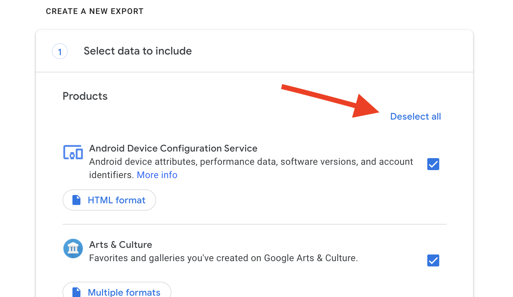

https://takeout.google.com
2. בטלו את הסימונים

3. רדו למטה וסמנו את היסטוריית המיקומים:

4. רדו עד למטה לחצו על next step.
5. לחצו על create export.
6. ישלח אליכם קובץ zip באימייל.
7. הכנסו בתוך הזיפ לתיקיית:
Takeout/Location History/Semantic Location History/2020
8. הקובץ הרצוי הוא האחרון.
אם עכשיו חודש אפריל אז 2020_APRIL